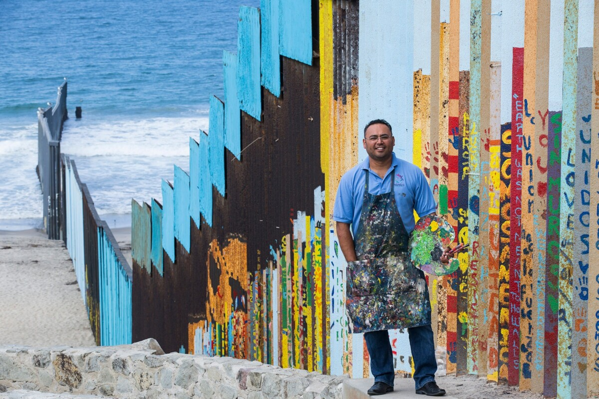

By donating to People Relief or any supporting assosiation. This link will send you to the SOS MÉDITERRANÉE force which saves a lot of lives at sea. You can donate every month or just once. Every cent can be useful, think of it!
Today, migration -which happens to be the movement of populations from one country to another one, so something harmless at first glance- has become something very dangerous, and in most cases fatal. In Europe, in the marine area between Lybia and Italy, hundred of people go missing or die. On the 13rd March 2024, 13 people dissapeared in this zone, and since the beginning of the year, 442 persons have drown, according to the international organization for migration. We can't pretend to be blind and ignore all of this anymore!
How can you concretely help?
By Donating to the french association SMR (solidarité migrants et réfugiés). Your donation could help the integration refugees! They accept cheks if you're not confortable with online payments. No excuses!
By donating to UNHCR, you are providing vital support to its mission to protect and assist refugees around the world. Your contribution ensures that those who have been forced to flee their homes. Have a better future!
If you cannot donate, that's okay! Money can be useful when deffending a cause, but we must remember that it is useless alone. We need people to be more aware about the situation, so that the victims can be heard and therefore helped. If you wish to talk of this cause around you -which is really convenient- here are some topics/artist you could be intrested in or support!
JR born in Paris on February 22, 1983, is a French contemporary and milltant artist. Using the technique of photographic collage, he exhibits freely in public spaces around the world. In 2017, JR created a massive installation depicting Kikito, a young boy peeking over the border fence that separates the United States and Mexico.
He's installation is in fact an invitation to a big picnic between all the participants. They could share the same water, the same dishes & teas while sitting at a large table enjoying the music of the mariachi group and thus forget the separation for a moment.


What you're seeing on the left is the largest artistic fresco in the world. This project was started by Enrique Chiu. Of Mexican origin, is a Californian artist who wishes to challenge society through his paintings. "It all started five years ago. I painted a part of the wall near my home in Tijuana at the request of an association helping migrants. Since then, every year, I paint a new section for a different association."
In 2016, he posted this project named “hermandad mural” (brotherhood mural) And surpinzingly, there was a buzz and he recived a lot of encouragement messages but above all he recived help. Indeed, no more thant 2,730 people have contributed their brushstrokes!
In an interview by France 24 in 2018, he concluded with these words: "The idea is to ensure that this wall is seen in another way. I wanted to use it as a canvas, a way to express ourselves freely and positively."
Here are a few artists that you could recommand or support!
Today, migration -which happens to be the movement of populations from one country to another one, so something harmless at first glance- has become something very dangerous, and in most cases fatal. In Europe, in the marine area between Lybia and Italy, hundred of people go missing or die. On the 13rd March 2024, 13 people dissapeared in this zone, and since the beginning of the year, 442 persons have drown, according to the international organization for migration. We can't pretend to be blind and ignore all of this anymore!
M.I.A with her song "Borders".
Borders" is a song by recording artist M.I.A. for her fifth studio album, AIM (2016) and has
been
described as an electronic song incorporating differents musical styles like hip hop and world
music.
Here, she denonces the general ignorance of refugees by the host country. She also denounces the
inaction of privileged people who could nevertheless be of great help.
The Hamilton Mixtape is a 2016 mixtape album featuring assorted songs from the 2015 Broadway musical Hamilton performed by various artists, including Kelly Clarkson, Wiz Khalifa, Nas, or Alicia Keys for example. In this song, they denounce the danger of immigration as well as the difficulty of integration that migrants must face. The videoclip is also very explicit, you should definitly take a look!
Finally, we would like to encourage you to take a look at the options below, which can also help refugees.
This is a link to a petition concerning the new law for immigration in France. If you would care to take a look, it could help hundreds of people in need, and it is totally free to sing it.
See the projectYou could also do volunteer work. Of course if you don't have egnough time to devote to it, we recommand you to choose another option. However if you feel like doing a good deed, here is their adress: sso.smr@gmail.com See the project
If you are really willing to help, you might consider hosting one or more emigrants to your home. It may be difficult to organize, but here is a link to a site that indicate how this can be done in clear steps.
See the projectTo finish we'd like to remind that they are millions and millions of refugees right now in the world. However due to various factors like climate change or wars, those number can only increase. It is important to remind everyone you can that migration concerns us all one way or another. Humans helping humans is the only solution, that is why we must do what we can, at our scale, even if we think it is nothing. The smallest steps can lead to bigger ones. So Thank you for your reading, your support, your visibility and your help!